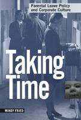

<body bgcolor="#FFFFFF" text="#000000" link="#0000FF" vlink="#CC0000" alink="#CC0000"><center><hr width="350" size="1" align="center" noshade>How flexible is the American workplace in supporting the family needs of employees, when it involves the temporary loss of their labor?<hr width="350" size="1" align="center" noshade><p><a href="https://cdcshoppingcart.uchicago.edu/Cart/ChicagoBook.aspx?ISBN=9781566396462&&PRESS=temple" target="_top">Buy this book!</a> | <a href="https://cdcshoppingcart.uchicago.edu/Cart/Cart.aspx?PRESS=temple" target="_top">View Cart</a> | <a href="https://cdcshoppingcart.uchicago.edu/Cart/Cart.aspx?PRESS=temple" target="_top">Check Out</a></p><p></p></center><!--none//--><h1>Taking Time</h1>
<H2>Parental Leave Policy and Corporate Culture</H2>
<h3>Mindy Fried</h3>
<P>cloth 1-56639-646-8 $64.50, Nov 98, <FONT COLOR=#990033>Out of Stock Unavailable</FONT>
<br>paper 1-56639-647-6 $28.95, Nov 98, <FONT COLOR=#990033>Available</FONT>
<BR> 256 pp
5.5x8.25
</P><BLOCKQUOTE><I>"In her highly readable study of parental leave at a 'best practices' company, Mindy Fried gives us a multi-faceted picture of life for working parents who take parental leave, their co-workers, managers and others. Her eyes are open to the problems but she is looking for the solutions. It's 'must reading.'"</I>
<br>&#151<b>Arlie Hochschild</b>, author of <I>The Time Bind: When Work Becomes Home and Home Becomes Work</I><I></I></BLOCKQUOTE>
<p>There is a growing movement among corporations to provide family benefits in order to attract and retain women workers. They recognize that these benefits have become a cost of doing business. Many of these benefits, like child-care and elder care, are aimed at supporting employees' ability to stay on the job. Parental leave policies are an exception, because they involve taking time away from the job.
<p>This timely book provides an inside look at life in a major U.S. corporation, focusing on the impact of workplace culture on the use of parental leave and those who use it. Fried begins by describing why
parental leave is critical to making parenting the job of both parents in two-parent families. She examines the varied experiences of different levels of workers in how parental leave policy is used.
<p>The author tells a rich and textured tale of day-to-day life in the skyscraper offices of a large corporation. How people dress, what their offices look like, which cafeteria they eat in, how the supervisors and supervised talk-all these things are part of the fabric of corporate culture that Fried describes.
<p>Most of us live in work cultures that value overtime. Fried argues that, as a "time policy" parental leave clashes with the powerful norm that corporate employees must work long and hard. Taking time for
parenting-a job that is devalued in our culture-may be perceived as "taking time away" from the company, and, in particular, from the company's productivity.
<BR>&nbsp;<h2>Excerpt</h2><P>Excerpt available at <a href="http://www.temple.edu/tempress">www.temple.edu/tempress</a></p>
<BR>&nbsp;<h2>Reviews</h2>
<p><I>"Corporate executives who are at all serious about creating family-friendly policies need to curl up with this book tonight. They will learn from this study how workplace culture affects the assumptions and practices of parental leave policy and those who use it. More importantly, they will be provoked and challenged to implement the whole array of work life benefits needed to create family-friendly corporations."</I>
<br>&#151<b>Bradley Googins</b>, Director, Center for Corporate Community Relations, Boston College
<p><I>"One of the most astute analyses of corporate culture available today and a vivid and compelling story that shows how even the best of companies struggles to make good on its family-friendly policies. If employees and managers are to develop collaborative ways of transforming workplace cultures, then innovators and policymakers will have to confront the questions that this book so profoundly raises."</I>
<br>&#151<b>Carmen Sirianni</b>, Brandeis University
<BR>&nbsp;<h2>Contents</h2><P>
<p>Acknowledgments
<br>1. Workplace Culture and Parental Leave Policy
<br>2. Why Is Parental Leave Needed?
<br>3. The Decision to Take time
<br>4. Taking Time: Being Out on Leave
<br>5. Return to the Job
<br>6. From Taking Time to Making Time: Defining Strategies for Change
<br>7. Conclusion
<br>Notes
<br>Bibliography
<br>Index
</P><BR>&nbsp;<H2>About the Author(s)</H2>
<table><tr><td valign="top"><img src="/tempress/authors/1350_au.gif" height="90" width="75"></td><td width="100%" valign="middle"><p><B>Mindy Fried</B> is the Project Director for the National Work/Life Measurement Project at Boston College Center for Work and Family. She has worked for nearly twenty years on work and family issues. Her other books include Babies and Bargaining: Working Parents Take Action and How Does Your Community Grow? Planting Seeds for Quality Day Care, co-written with Elaine O'Reilly.</P></td></tr></table>
<BR><H2>Subject Categories</H2>
<p><A HREF="/tempress/family.html" TARGET="_top">Family Policy</a>
<BR><A HREF="/tempress/labor.html" TARGET="_top">Labor Studies and Work</a>
<BR><A HREF="/tempress/women.html" TARGET="_top">Women's Studies</a>
</p>
<BR><h2 class="inpageheading">In the series</H2>
<P><I><a href="http://www.temple.edu/tempress/women_political.html" onMouseOver="window.status='Click for other books in this series!'; return true;" onMouseOut="window.status=''; return true;" target="_top">Women in the Political Economy</a></i>, edited by Ronnie J. Steinberg.
</p><p>No longer active.<p><i>Women in the Political Economy</i>, edited by Ronnie J. Steinberg, includes books on women and issues of work, family, social movements, politics, feminism, and empowerment. It emphasizes women's roles in society and the social construction of gender and also explores current policy issues like comparable worth, international development, job training, and parental leave.</p>
<p align="center"><a href="https://cdcshoppingcart.uchicago.edu/Cart/ChicagoBook.aspx?ISBN=9781566396462&&PRESS=temple" target="_top">Buy this book!</a> | <a href="https://cdcshoppingcart.uchicago.edu/Cart/Cart.aspx?PRESS=temple" target="_top">View Cart</a> | <a href="https://cdcshoppingcart.uchicago.edu/Cart/Cart.aspx?PRESS=temple" target="_top">Check Out</a></p><p><font face="Arial" size="1"><a href="copyright.html" onMouseOver="window.status='Web Copyright Policy';return true;" onMouseOut="window.status=''" title="Web Copyright Policy">&copy;</a> 2015 <a href="http://www.temple.edu" target="new" onMouseOver="window.status='Link to Temple University home page';return true;" onMouseOut="window.status=''" title="Link to Temple University home page">Temple University</a>. All Rights Reserved. http://www.temple.edu/tempress/titles/1350_reg.html</font></p>